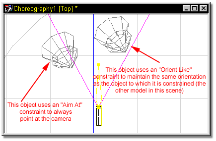
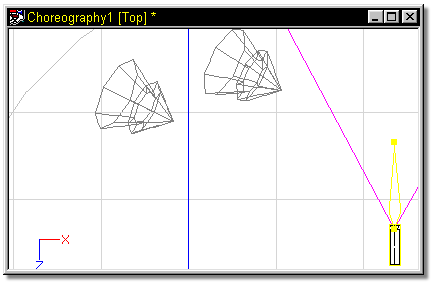

The “Orient Like” constraint orients the constrained bone in the same 3D
orientation as the target bone. Both the bone and the roll handle will aim in the
same direction. This constraint is generally used in combination with another
(such as “Aim At”) to orient two objects similarly.
The “Orient Like” constraint orients the constrained bone in the same 3D
orientation as the target bone. Both the bone and the roll handle will aim in the
same direction. This constraint is generally used in combination with another
(such as “Aim At”) to orient two objects similarly.

This choreography contains two objects. The one on the left is constrained to Aim At” the camera. The object on the right is constrained to “Orient Like” the first object.

As the camera moves about the scene, the first object will always rotate to aim at it. The second object, while it may or may not end up pointing at the camera will always be oriented like the first object.

Tell Me About:
About Constraints
"Aim At" Constraints
"Kinematic" Constraints
"Path" Constraints
"Translate To" Constraints
"Aim Roll At" Constraints
"Spherical Limits" Constraints
Blending Constraints
Constraint Order
Animating Constraints
Targets
Circular Constraints